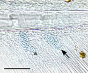
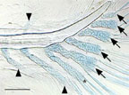
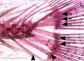

Name: Parhypural
Abbreviation: phy
Synonyms: synonyms
Figures:
|  hypurals (larval, 4mm) |
 hypurals (larval, 5.8mm) |
 hypurals (adult) |
Description: The cartilaginous precursor of the parhypural appears ventral to the posterior tip of the notochord at early larval stages (~3.9 mm notochord length, ~5 d). The parhypural is the last hemal spine through which the ventral aorta passes. The parhypural will support fin rays of the caudal fin. The parhypurapophyses (also "hypurapophyses") are the paired bony lateral extensions off the hemal arch of the parhypural. They serve as origin for the anterolateral bundle of the hypochordal longitudinal muscle (Lundberg and Baskin 1969).
Homologues:
Stages:
Parents (forms from): sclerotome
Children:
Group (member of):
Markers:
Publications:
Ferreri et al., J. Fish Biol. 56:1115-1128 (2000)
Dingerkus and Uhler, Stain Technology 52: 229-232 (1977)
Lundberg JG, Baskin JN (1969) The Caudal Fin Skeleton of the Catfishes, Order Siluriformes. American Museum Novitates
Potthoff, In Ontogeny and Systematics of Fishes, vol. 1 (ed. H. G. Moser) Spec. Pub. Am. Soc. Icthyol. Herp, (1984).
Comments: